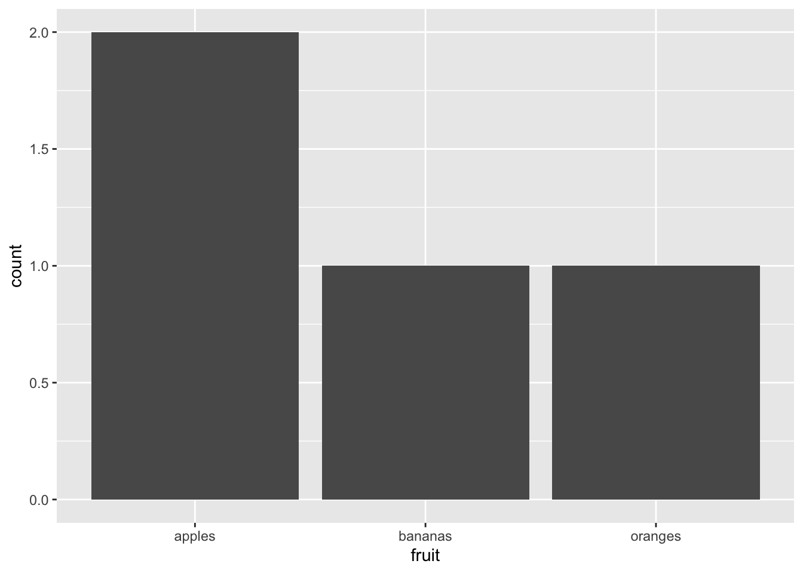
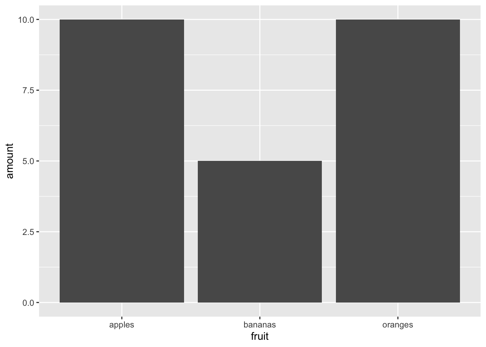

Chapter 3 Week 1, Class 2: Introduction to R and the Tidyverse
Note: if you’re reading this as part of the ‘Applying Network Analysis to Humanities’ course, you should also move a copy to your ‘my-work’ folder in your CSC notebook Workspace, using the method we learned in the previous class.
You can either read the static copy in your browser, or else read it directly in the CSC RStudio application, where you can edit and run the code chunks.
There are a number of smaller exercises at the end of the document. Once you’ve completed these, knit the document, and email the HTML file to the course leaders. Again, this was covered in last week’s documentation.
3.2 What and why?
The format of much of the data you’ll work with in R is not that different to the kind of file you would normally open in a spreadsheet programme - what is known as a dataframe.
A dataframe is basically a spreadsheet - it contains rows with observations, and columns with variables. Each row is generally a thing, for want of a better word. A thing that wants to be counted, either by summarising it as a more general thing, or turning it into something else and then counting it, or removing some of the things first and then counting the leftovers.
You can do a lot more interesting tasks with a thing in a dataframe. A thing might be a single polygon, in a huge dataframe of polygons or lines, all of which add up to a map, which we can then count, sort, filter and render as an image or even an interactive application.
3.3 Using R
3.3.1 Basic R data types.
It is worth understanding the main types of data that you’ll come across, in your environment window. First, you’ll have dataframes. These are the spreadsheet-like objects which you’ll use in most analyses. They have rows and columns.
Next are variables. A variable is assigned to a name, and then used for various purposes.
You’ll often hear of an item called a vector. A vector is a list of objects of the same type. A vector can be a single column in a dataframe (spreadsheet), which means they are used very often in R to manipulate data. A vector can have different types: for example, a character vector looks like this c("apples", "bananas", "oranges").
A vector is created with the command c(), with each item in the vector placed between the brackets, and followed by a comma. If your vector is a vector of words, the words need to be in inverted commas or quotation marks.
fruit = c("apples", "bananas", "oranges", "apples")
colour = c("green", "yellow", "orange", "red")
amount = c(2,5,10,8)You can create a dataframe using the data.frame() command. You just need to pass the function each of your vectors, which will become your columns.
fruit_data = data.frame(fruit, colour, amount, stringsAsFactors = FALSE)Notice above that the third column, the amount, has
All the items in a vector are coerced to the same type. So if you try to make a vector with a combination of numbers and strings, the numbers will be converted to strings. I wouldn’t worried too much about that for now.
So for example if you create this vector, the numbers will get converted into strings.
fruit = c("apples", 5, "oranges", 3)
fruit## [1] "apples" "5" "oranges" "3"3.4 Tidyverse
Most of the work in these notebooks is done using a set of packages developed for R called the ‘tidyverse’. These enhance and improve a large range of R functions, with much nice syntax - and they’re faster too. It’s really a bunch of individual packages for sorting, filtering and plotting data frames. They can be divided into a number of diferent categories.
All these functions work in the same way. The first argument is the thing you want to operate on. This is nearly always a data frame. After come other arguments, which are often specific columns, or certain variables you want to do something with.
You installed the package in the last notebook. Make sure the library is loaded by running the following in an R chunk in a notebook:
library(tidyverse)Here are a couple of the most important ones
3.4.1 select(), pull()
select() allows you to select columns. You can use names or numbers to pick the columns, and you can use a - sign to select everything but a given column.
Using the fruit data frame we created above: We can select just the fruit and colour columns:
select(fruit_data, fruit, colour)## fruit colour
## 1 apples green
## 2 bananas yellow
## 3 oranges orange
## 4 apples redSelect everything but the colour column:
select(fruit_data, -colour)## fruit amount
## 1 apples 2
## 2 bananas 5
## 3 oranges 10
## 4 apples 8Select the first two columns:
select(fruit_data, 1:2)## fruit colour
## 1 apples green
## 2 bananas yellow
## 3 oranges orange
## 4 apples red3.4.2 group_by(), tally(), summarise()
The next group of functions group things together and count them. Sounds boring but you would be amazed by how much of data science just seems to be doing those two things in various combinations.
group_by() puts rows with the same value in a column of your dataframe into a group. Once they’re in a group, you can count them or summarise them by another variable.
First you need to create a new dataframe with the grouped fruit.
grouped_fruit = group_by(fruit_data, fruit)Next we use tally(). This counts all the instances of each fruit group.
tally(grouped_fruit)## # A tibble: 3 × 2
## fruit n
## <chr> <int>
## 1 apples 2
## 2 bananas 1
## 3 oranges 1See? Now the apples are grouped together rather than being two separate rows, and there’s a new column called n, which contains the result of the count.
If we specify that we want to count by something else, we can add that in as a ‘weight’, by adding wt = as an argument in the function.
tally(grouped_fruit, wt = amount)## # A tibble: 3 × 2
## fruit n
## <chr> <dbl>
## 1 apples 10
## 2 bananas 5
## 3 oranges 10That counts the amounts of each fruit, ignoring the colour.
3.4.3 filter()
Another quite obviously useful function. This filters the dataframe based on a condition which you set within the function. The first argument is the data to be filtered. The second is a condition (or multiple condition). The function will return every row where that condition is true.
Just red fruit:
filter(fruit_data, colour == 'red')## fruit colour amount
## 1 apples red 8Just fruit with at least 5 pieces:
filter(fruit_data, amount >=5)## fruit colour amount
## 1 bananas yellow 5
## 2 oranges orange 10
## 3 apples red 83.4.4 sort(), arrange(), top_n()
Another useful set of functions, often you want to sort things. The function arrange() does this very nicely. You specify the data frame, and the variable you would like to sort by.
arrange(fruit_data, amount)## fruit colour amount
## 1 apples green 2
## 2 bananas yellow 5
## 3 apples red 8
## 4 oranges orange 10Sorting is ascending by default, but you can specify descending using desc():
arrange(fruit_data, desc(amount))## fruit colour amount
## 1 oranges orange 10
## 2 apples red 8
## 3 bananas yellow 5
## 4 apples green 2If you `sortarrange() by a list of characters, you’ll get alphabetical order:
arrange(fruit_data, fruit)## fruit colour amount
## 1 apples green 2
## 2 apples red 8
## 3 bananas yellow 5
## 4 oranges orange 10You can sort by multiple things:
arrange(fruit_data, fruit, desc(amount))## fruit colour amount
## 1 apples red 8
## 2 apples green 2
## 3 bananas yellow 5
## 4 oranges orange 10Notice that now red apples are first.
3.4.5 left_join(), inner_join(), anti_join()
Another set of commands we’ll use quite often in this course are the join() ‘family’. Joins are a very powerful but simple way of selecting certain subsets of data, and adding information from multiple tables together.
Let’s make a second table of information giving the delivery day for each fruit type:
fruit_type = c('apples', 'bananas','oranges')
weekday = c('Monday', 'Wednesday', 'Friday')
fruit_days = data.frame(fruit_type, weekday, stringsAsFactors = FALSE)
fruit_days## fruit_type weekday
## 1 apples Monday
## 2 bananas Wednesday
## 3 oranges FridayThis can be ‘joined’ to the fruit information, to add the new data on the delivery day, without having to edit the original table (or repeat the information for apples twice). This is done using left_join.
Joins need a common key, a column which allows the join to match the data tables up. It’s important that these are unique (a person’s name makes a bad key by itself, for example, because it’s likely more than one person will share the same name). Usually, we use codes as the join keys. If the columns containing the join keys have different names (as ours do), specify them using the syntax below:
joined_fruit = fruit_data %>% left_join(fruit_days, by = c("fruit" = "fruit_type"))
joined_fruit## fruit colour amount weekday
## 1 apples green 2 Monday
## 2 bananas yellow 5 Wednesday
## 3 oranges orange 10 Friday
## 4 apples red 8 MondayIn this new dataframe, the correct weekday is now listed beside the relevant fruit type.
3.4.6 Piping
Another useful feature of the tidyverse is that you can ‘pipe’ commands through a bunch of functions, making it easier to follow the logical order of the code. This means that you can do one operation, and pass the result to another operation. The previous dataframe is passed as the first argument of the next function by using the pipe %>% command. It works like this:
fruit_data %>%
filter(colour != 'yellow') %>% # remove any yellow colour fruit
group_by(fruit) %>% # group the fruit by type
tally(amount) %>% # count each group
arrange(desc(n)) # arrange in descending order of the count## # A tibble: 2 × 2
## fruit n
## <chr> <dbl>
## 1 apples 10
## 2 oranges 10That code block, written in prose: “take fruit data, remove any yellow colour fruit, count the fruits by type and amount, and arrange in descending order of the total”
3.4.7 Plotting using ggplot()
The tidyverse includes a pretty great plotting library called ggplot2. This can be used by piping your dataframe to a function called ggplot(). The basic idea is that you add your data, then you can add plot elements which are called geoms. Some common ones are geom_line(), geom_bar() and geom_point().
To the geom function you add aesthetics, which is basically telling the function which bits of your data should be responsible for which parts of the visualisation. These are added using aes(). I’ll explain a bit more about some of these aesthetics as I go along.
As an example:
Bar chart of different types of fruit (one each of bananas and oranges, two types of apple)
fruit_data %>% ggplot() + geom_bar(aes(x = fruit)) Counting the total amount of fruit:
fruit_data %>% ggplot() + geom_bar(aes(x = fruit, weight = amount))
Charting amounts and fruit colours:
fruit_data %>% ggplot() + geom_bar(aes(x = fruit, weight = amount, fill = colour)) 
And just because it annoys me having random colours, we can map them to the actual colours:
fruit_data %>%
ggplot() +
geom_bar(aes(x = fruit, weight = amount, fill = colour)) +
scale_fill_manual(values = c("orange" = "orange",
"green" = "#8db600",
"red" = "#ff0800",
"yellow" = "#ffe135"))
3.5 Exercise for this week
So that’s a very quick introduction to R. There’s loads of places to learn more.
The Pirate’s Guide to R, a good beginners guide to base R